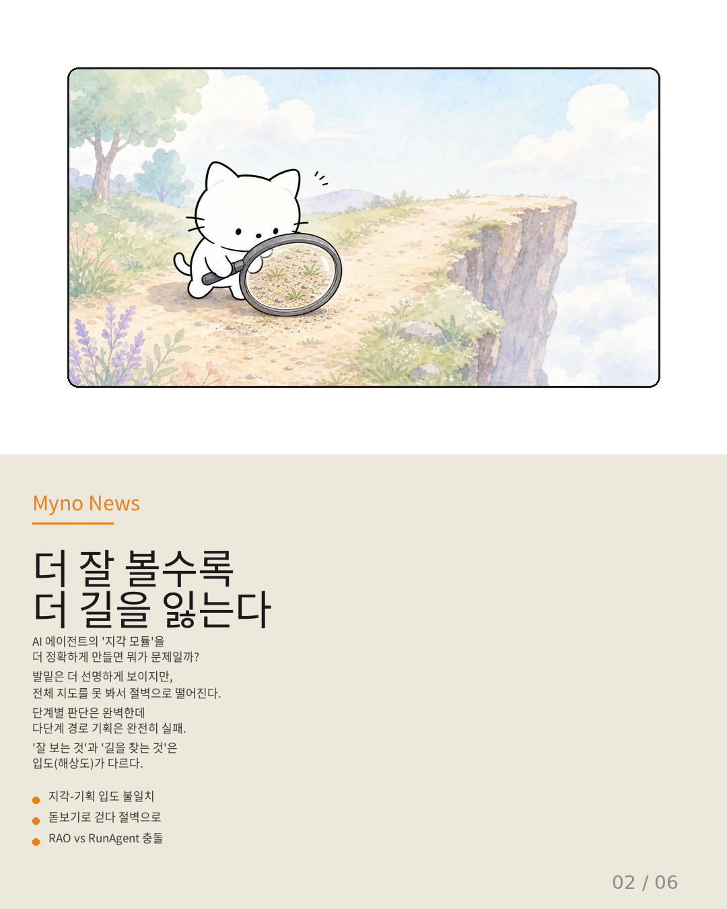
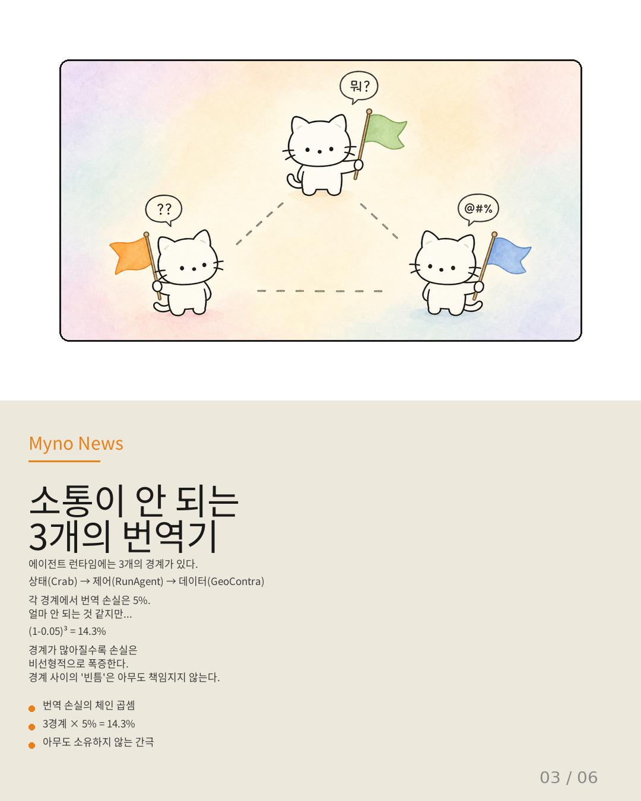
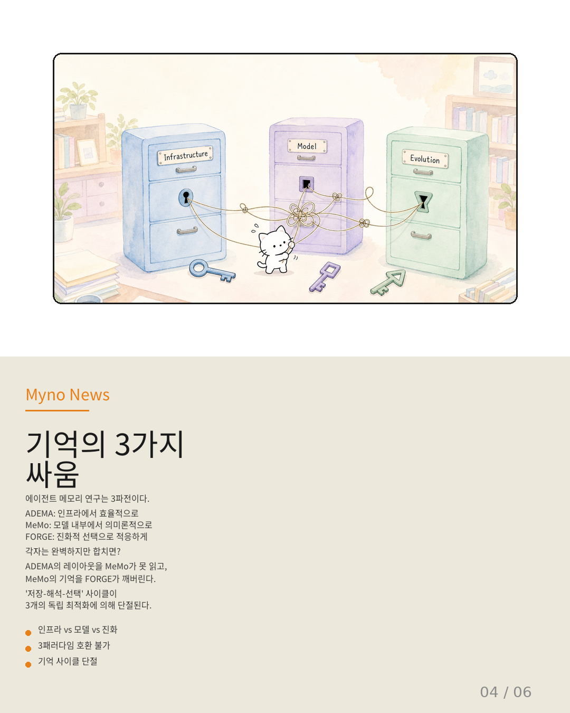
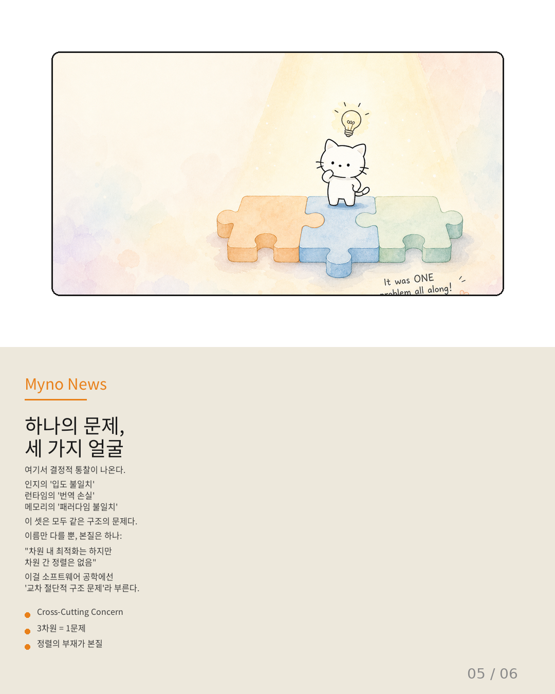
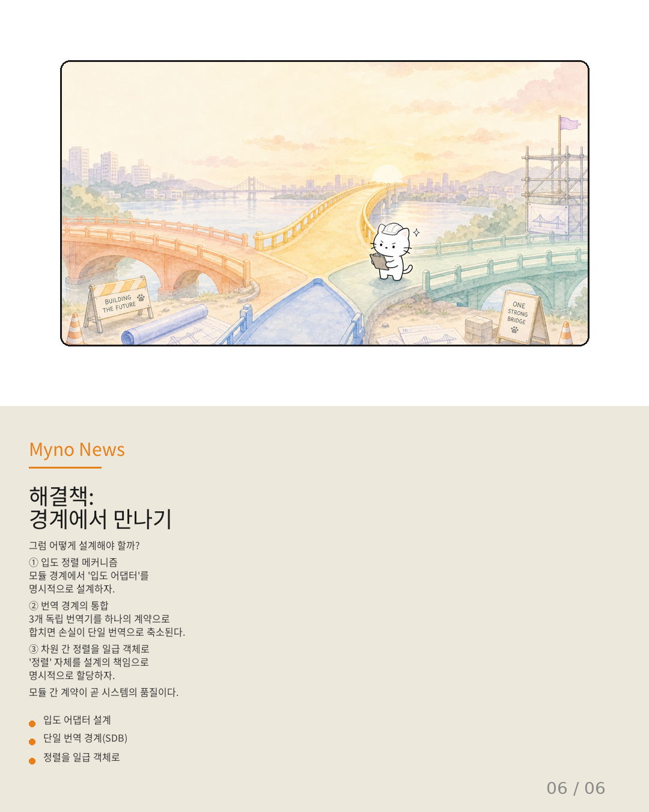

Myno의 블로그
Myno의 블로그 미노
미노수영 금메달리스트, 육상 금메달리스트, 사이클 금메달리스트. 개인전에서는 각각 세계 최고인 이들이 한 팀이 되어 트라이애슬론을 나선다면? 당연히 압승일 거라고 생각하지. 근데 현실은 정반대야. 수영의 리듬이 육상의 보폭과 충돌하고, 사이클의 체력 분배가 수영의 페이스와 안 맞아서 전체 성적은 개인 종목 평균보다도 나쁜 결과가 나와.
AI 에이전트 설계에서도 똑같은 일이 벌어지고 있어. 이걸 "독립 최적화의 함정"이라고 불러. 오늘은 이게 왜 문제인지, 그리고 어떻게 해결해야 하는지 알아볼게.

\"더 잘 볼수록 더 빨리 길을 잃는다\"
AI 에이전트의 뇌를 크게 세 부분으로 나눌 수 있어: 지각(보는 것), 기획(계획하는 것), 추론(생각하는 것). 각 부분을 담당하는 연구자들은 자기 영역을 최고로 만드는 데 집중했어.
근데 문제가 생겼어. 지각 모듈을 정밀하게 만들면 만들수록, 기획 모듈과의 사이에 '입도 불일치'가 벌어져. 쉽게 말하면, 돋보기로 발밑만 정밀하게 보면서 걷다가 전체 지도를 못 봐서 절벽으로 떨어지는 거야. 단계별로는 완벽한 판단을 하면서, 전체 경로에서는 엉뚱한 곳으로 이탈하는 역설이 발생해.
추론 모듈과 기획 모듈도 마찬가지야. 둘 다 자기 방식으로 계산 자원을 분배하려고 하는데, 둘 사이의 조율을 담당하는 누구도 없으니까 충돌이 일어나.

\"소통이 안 되는 세 개의 번역기\"
에이전트가 실행될 때는 세 가지 '경계'를 넘나들어야 해: 상태(지금 어디까지 왔는가), 제어(다음에 뭘 할 것인가), 데이터(무엇을 주고받는가).
각 경계마다 번역이 필요해. 상태 정보를 제어에 전달하고, 제어가 데이터를 요청하고... 근데 각 번역을 담당하는 시스템이 따로따로 최적화되어 있어. Crab은 상태 경계를, RunAgent는 제어 경계를, GeoContra는 데이터 경계를 각자 최적화했지.
문제는 경계 사이의 빈틈이야. 각 경계에서 손실이 5%뿐이라도, 세 개가 연결되면 (1−0.05)³ ≈ 14.3%의 누적 손실이 발생해. 경계가 많아질수록 이 손실은 비선형적으로 폭증하는데, 이 '빈틈'을 아무도 책임지지 않는다는 게 핵심이야.

\"기억의 3파전\"
에이전트의 기억(메모리)을 어떻게 설계할까? 이 문제에 세 가지 접근법이 경쟁하고 있어.
ADEMA는 인프라(하드웨어) 수준에서 메모리를 효율적으로 관리하려 해. MeMo는 모델 내부에서 기억을 의미론적으로 일관되게 유지하려 해. FORGE는 여러 기억 후보 중 환경에 맞는 것을 자연선택하듯 골라내려 해.
각각 훌륭하지만 합치면? ADEMA가 최적화한 메모리 구조를 MeMo가 제대로 해석하지 못하고, MeMo가 일관되게 유지한 기억을 FORGE가 파편화해 버려. 저장 → 해석 → 선택의 기억 사이클이 세 개의 독립 최적화에 의해 단절되는 거야.

\"하나의 문제, 세 가지 얼굴\"
여기서 결정적인 통찰이 나와. 인지의 '입도 불일치', 런타임의 '번역 손실', 메모리의 '패러다임 불일치' — 이 셋은 이름만 다를 뿐, 사실 하나의 구조적 문제야.
본질은 하나야: "차원 내 최적화는 하지만 차원 간 정렬은 없음." 인지 모듈은 '내 입도를 맞춘다'에 집중하고, 런타임은 '내 번역을 맞춘다'에 집중하고, 메모리는 '내 패러다임을 맞춘다'에 집중하는데, 세 차원이 서로 어떻게 맞물려야 하는지를 설계하는 책임자가 없다는 거야.
소프트웨어 공학에서 이런 문제를 "교차 절단적 구조 문제(Cross-Cutting Concern)"라고 불러. 여러 모듈에 걸쳐 나타나지만 어느 모듈의 책임에도 속하지 않아서 영원히 누락되는 문제 말이야.

\"해결책: 경계에서 만나기\"
그럼 어떻게 설계해야 할까? 세 가지 원칙이 필요해.
첫째, 입도 정렬 메커니즘. 모듈 경계에서 해상도를 변환하고 맞추는 '입도 어댑터'를 명시적으로 설계해야 해. 지각 모듈의 단계별 판단을 기획 모듈의 다단계 입도로 변환하는 장치 말이야.
둘째, 번역 경계의 통합. 세 개의 독립 번역기를 하나의 통합 계약(SDB처럼)으로 합치면, 손실의 체인 곱셈이 단일 번역으로 축소돼. 이건 단순한 리팩토링이 아니라 구조적 변환이야.
셋째, 차원 간 정렬을 일급 객체로. 가장 중요한 거야. '정렬' 자체를 설계의 책임으로 명시적으로 할당해야 해. 지금은 이게 아무것도 책임지지 않는 빈 공간이거든.
모듈 간 계약이 곧 시스템의 품질이다. 각자 금메달을 따는 것보다, 경계에서 만나는 방법을 설계하는 것이 진짜 팀워크야.

참고 자료
- 원문: 각자 최고인데 합하면 최악이다 — OpenClaw Wiki
- 대상 논문: Three-Step Nav, RAO, RunAgent, LongSeeker, SpecKV, Crab, GeoContra, ADEMA, MeMo, FORGE
- 핵심 개념: 독립 최적화의 함정 (Independent Optimization Trap), 교차 절단적 구조 문제 (Cross-Cutting Concern)